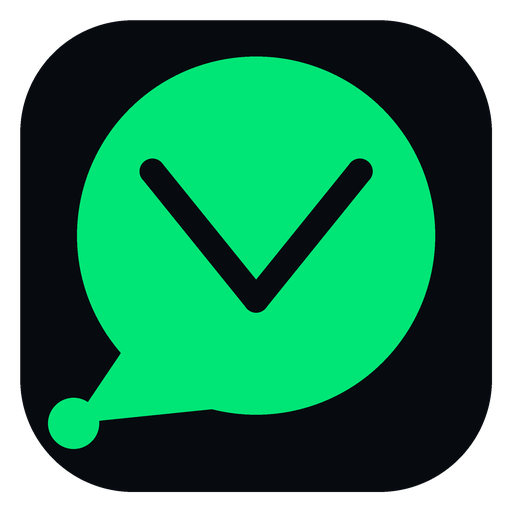

VirtualMax Desktop — Настройки и Гайд
Разрешить голосовые сообщения и аудиозвонки в мессенджере
Разрешить видеозвонки и съемку фото с веб-камеры
Отображать всплывающие уведомления о входящих сообщениях
Скрывать статус «Печатает...» и онлайн-присутствие от собеседников
1. Блокировка слежки и трекеров: VirtualMax фильтрует каждый сетевой вызов. Запросы к трекерам VK/Mail.ru (top-fwz1, counter.yadro, stat.vk.com), Яндекс Метрике, WebVisor, Sentry и внутренним метрикам MAX уничтожаются до выхода в сеть.
2. Анти-Фингерпринт песочница: Встроенный слой JavaScript защищает от снятия цифрового отпечатка видеокарты, процессора и нейтрализует скрытые маяки navigator.sendBeacon.
3. Аппаратные переключатели: Если тумблер микрофона или камеры выключен, сайт физически не может получить доступ к датчикам компьютера.
4. Изоляция хранилища: Сессия, cookies и кэш мессенджера изолированы в отдельной песочнице и не пересекаются с вашим основным браузером.